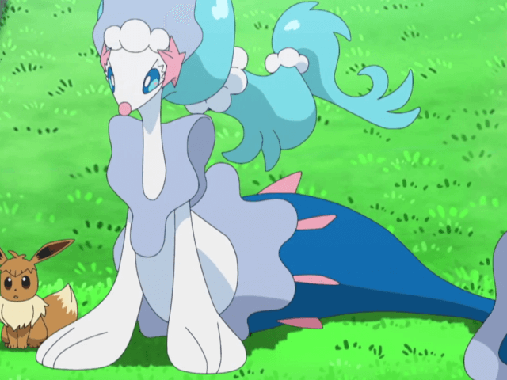

Post #1
Primarina is a marine Pokémon that resembles a cross between a sea lion and a mermaid. Most of its body is white, but it has a long, blue, fish-like tail. It has a long snout with a round, pink nose, bright blue eyes with long white eyelashes, and long light blue hair trailing off the back of its head. A tiara-like structure rests on its forehead, consisting of a line of pearls with a pink sea star at one corner and a thin, transparent blue fin extending back over its hair. Its hair is contained to a ponytail by two strings of pearls. This ponytail, as shown in the games and anime, becomes temporarily undone when it performs certain moves. On its body are three fins similar to the one on its crown: one that drapes around its shoulders and chest, one around its waist where the fishtail begins, and one near the tip of its tail. It has long front fins with three digits. Primarina's long fishlike tail is bright blue with small pointed, pink fins around its hips. Its tail fins are white, and it is capable of using them as feet to stand up.
Post #2

Primarina uses water balloons and its voice as its main weapons. Because its voice is instrumental in its battle strategy, its care should be a priority for Trainers. The melody it uses has been passed down for generations. Water balloons are released as it dances, and are controlled by its voice. In the moonlight, the balloons glitter and create a beautiful scene. However, some of the balloons are explosive and triggered by touch. This theatrical Pokémon considers every battle a stage and uses the non-explosive balloons as platforms to tease opponents.